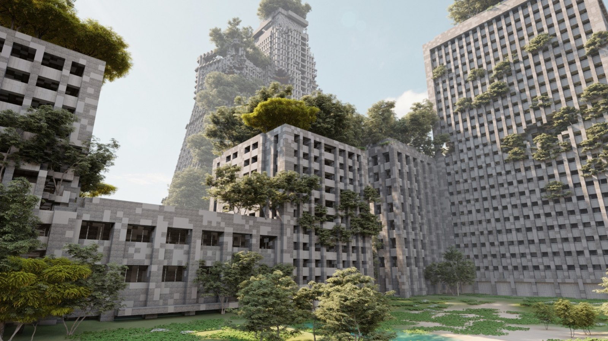
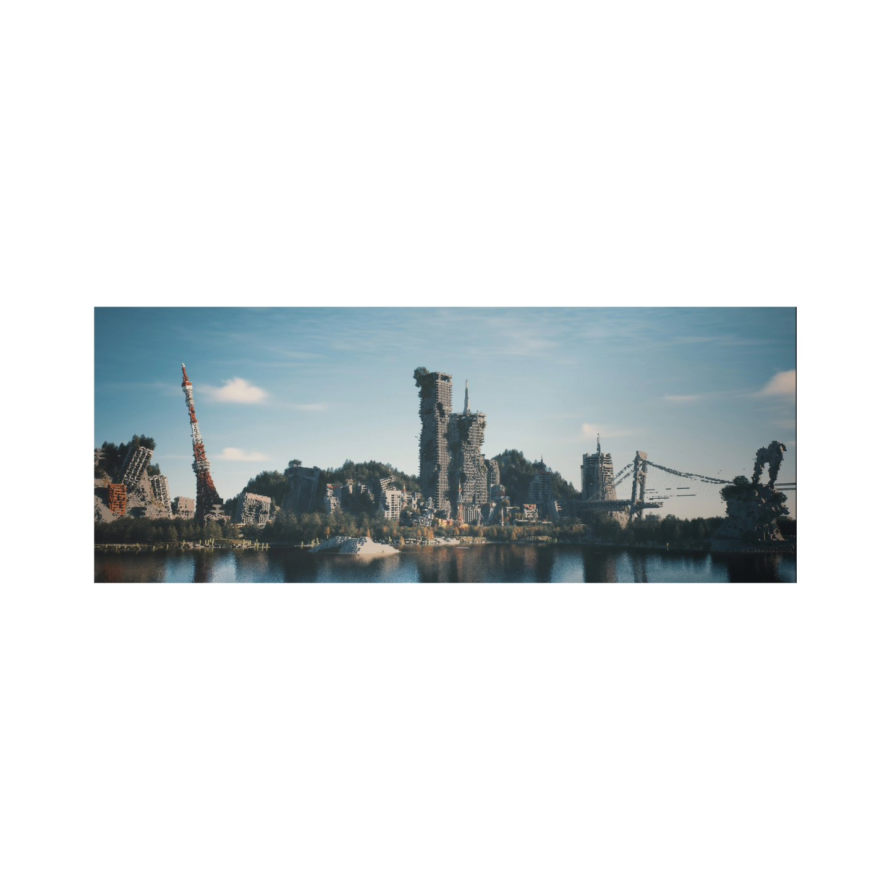
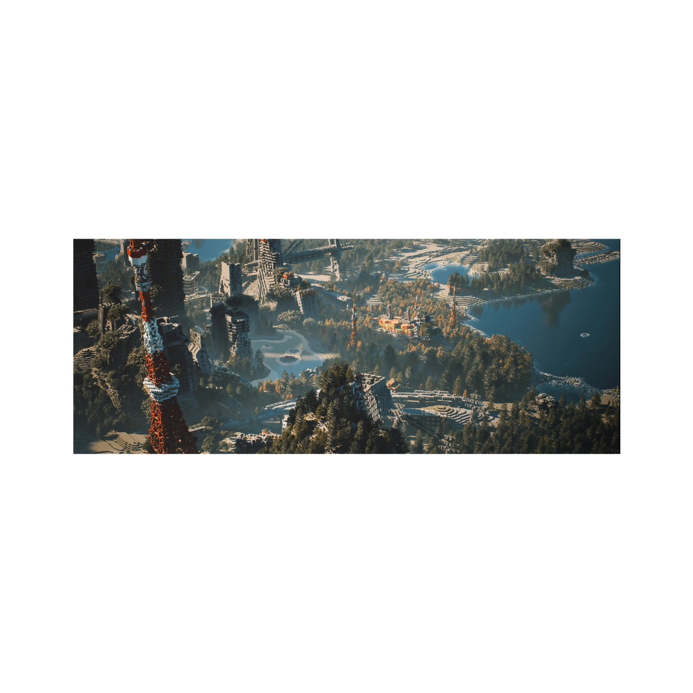
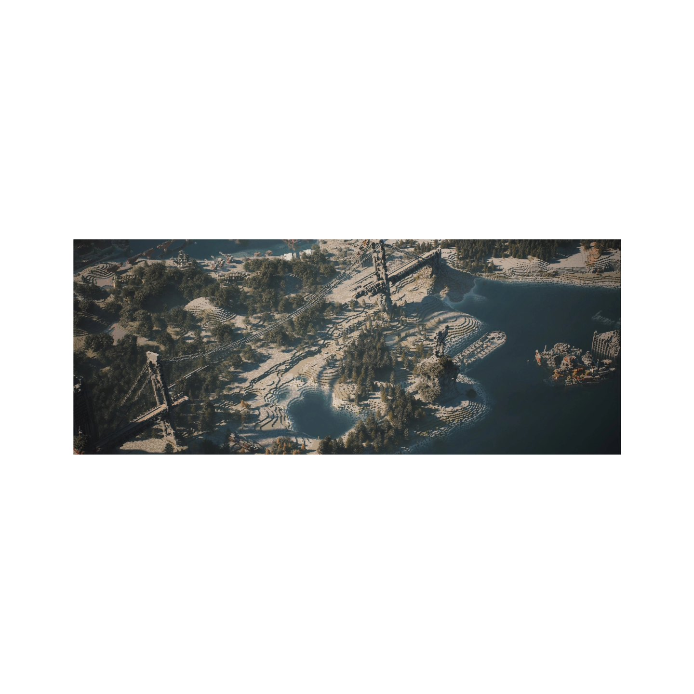
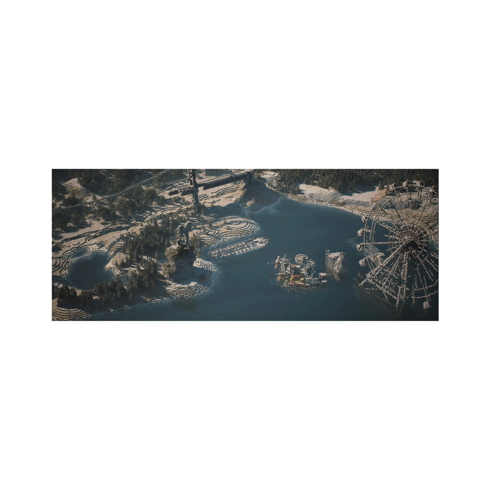
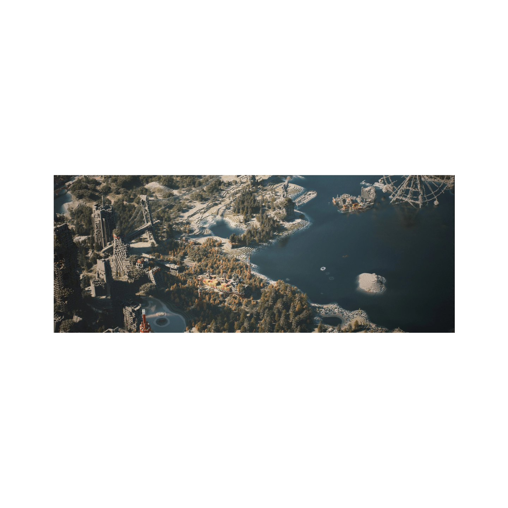
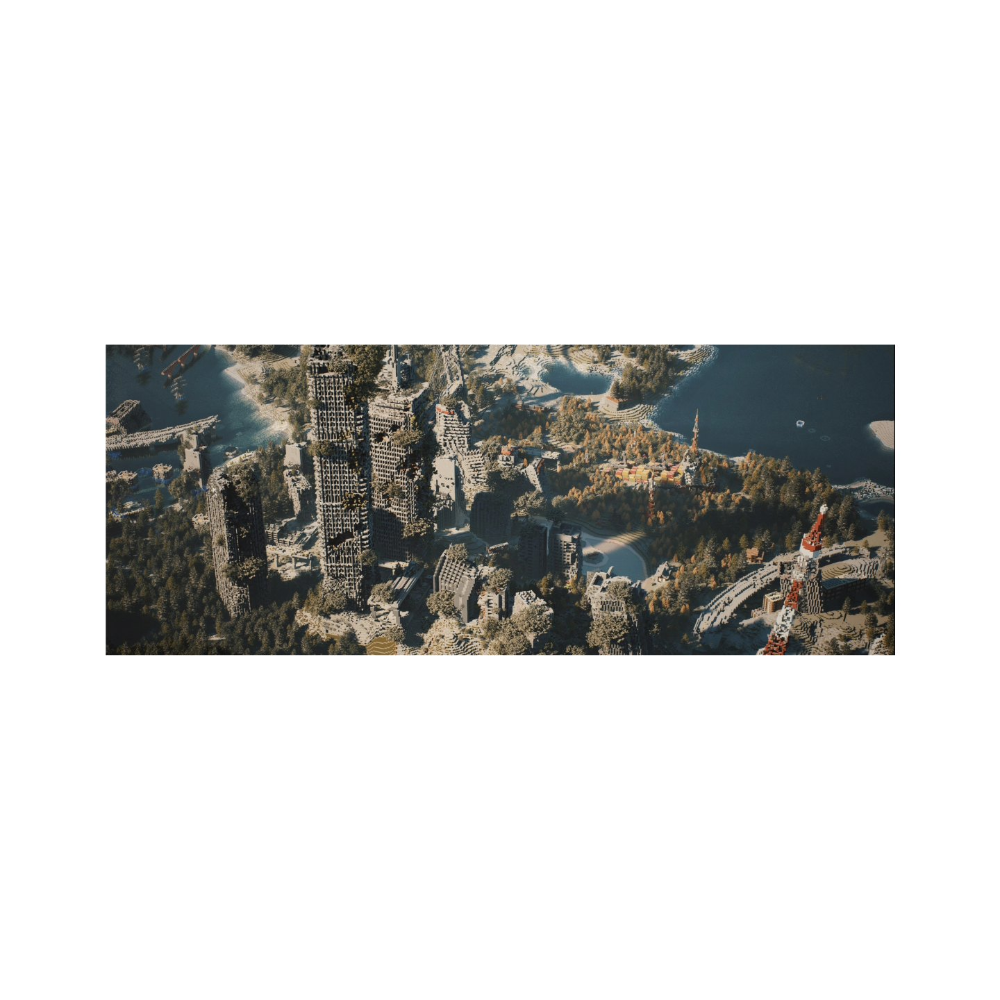

Dawn Elegy is a post-apocalyptic survival map set across a sprawling ruined landscape — overgrown high-rises, an abandoned factory, a stranded cargo ship, collapsed bridges and towers slowly reclaimed by nature. Published on PlanetMinecraft in 2022, it has gathered 15,000+ views and 3,000+ downloads, with a possible future update into an RPG map.
黎明挽歌 是一张末世废土生存地图，铺展在一片广袤的废墟景观之中——被植被吞没的高楼、废弃的工厂、搁浅的货轮、坍塌的桥梁与高塔，自然正缓慢地重新接管这座城市。2022 年发布于 PlanetMinecraft，已累计 15,000+ 次浏览与 3,000+ 次下载，未来或更新为 RPG 地图。
Screenshots rendered with ITT3 / SEUS HRR3 shaders. · 截图使用 ITT3 / SEUS HRR3 光影渲染。
View on PlanetMinecraft ↗






